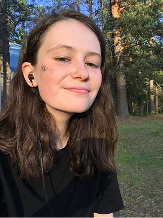
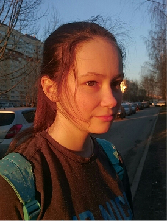

Kuka minä olen?
Nimeni on Lisa, ja tervetuloa sivustolleni!
Olen opiskelija Haaga-Helia ammattikorkeakoulussa ja loin tämän sivun alun perin koulutehtävää varten. Pian kuitenkin huomasin, että se on myös loistava tilaisuus jakaa intohimoni vegaaniruokaan muiden kanssa.
Olen ollut vegaani jo kahdeksan vuotta, ja tänä aikana olen ehtinyt kokeilla lukemattomia herkullisia reseptejä sekä oppia paljon vegaanisesta elämäntavasta. Rakastan hyvää ruokaa ja sen valmistamista, ja nyt haluan inspiroida myös muita kokeilemaan kasvipohjaista kokkausta!
Vapaa-ajallani uppoudun kirjoihin ja vietän aikaa kissani kanssa — se tosin ei ole vegaani!

Oma vegaanitarinani
Kuulin vegaaniruokavaliosta ensimmäisen kerran koulussa ja päätin heti kokeilla sitä. Aluksi en edes tiennyt tarkalleen, mikä ero on kasvissyöjillä ja vegaaneilla, joten jätin pois vain liha- ja maitotuotteet. Söin näin kuukauden ajan ja pidin siitä todella paljon, joten halusin ottaa asiasta enemmän selvää!
Etsin tietoa netistä ja opin, mitä vegaanit tarkalleen ottaen syövät ja mitä eivät. Sen jälkeen luovuin myös marmeladeista ja muista tuotteista, jotka sisälsivät eläinperäisiä ainesosia. Minulle tämä muutos oli melko helppo, sillä en ollut koskaan erityisemmin pitänyt lihasta.
Vaikeinta oli luopua juustosta — siihen aikaan vegaanisia vaihtoehtoja ei juuri ollut. Pidin taukoa juustosta jonkin aikaa, kunnes päätin kokeilla sitä uudelleen. Yllätyksekseni en enää pitänyt sen mausta! Se oli viimeinen kerta, kun söin mitään eläinperäistä.
Nykyään vegaanina oleminen on mielestäni paljon helpompaa kuin silloin, kun itse aloitin. Kasvipohjaisia vaihtoehtoja löytyy jokaisesta kaupasta, eivätkä ne enää ole kovin kalliita.
On mahtavaa nähdä, kuinka paljon maailma on muuttunut!